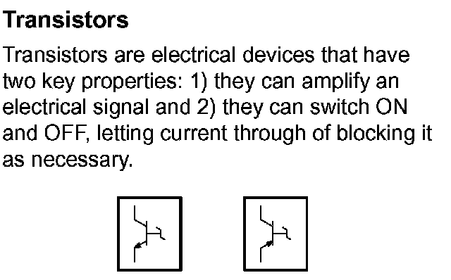

Operation CHARM
: Car repair manuals for everyone.
Home
>>
Acura
>>
2007
>>
MDX V6-3.7L
>>
Repair and Diagnosis
>>
Relays and Modules
>>
Relays and Modules - Powertrain Management
>>
Relays and Modules - Computers and Control Systems
>>
Engine Control Module
>>
Diagrams
>>
Diagram Information and Instructions
>>
Symbol and Wire Color Definitions
>>
Transistors
Transistors
